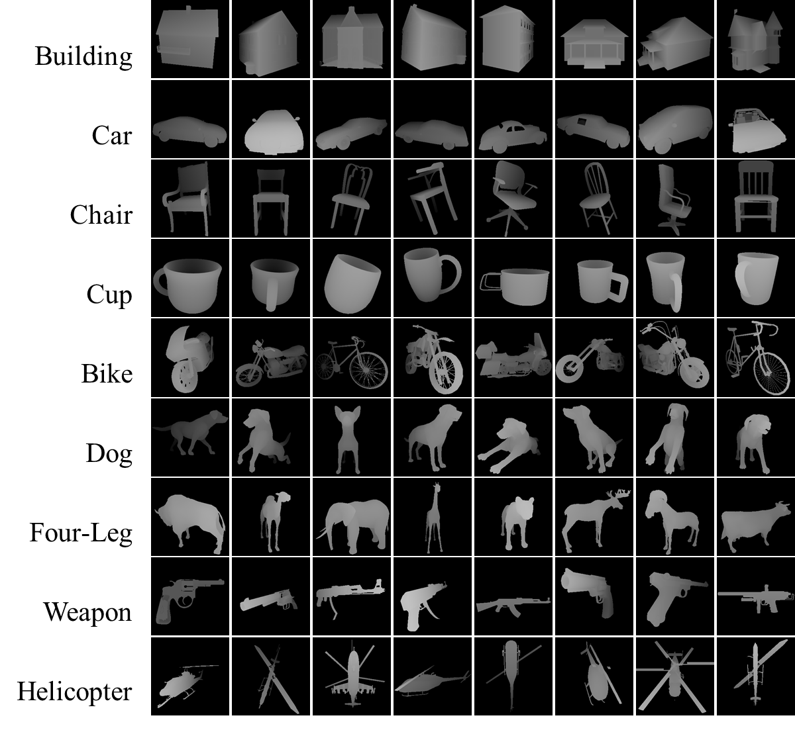
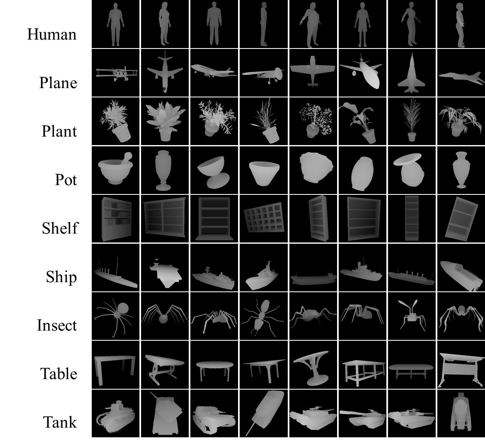

Data & Source Codes
Shape Index
Go to the project page.
HEp-2 Cell Classification
Go to the project page.
3D Facial Action Unit Detection
Go to the project page.
Biomedical Image Dataset
A sample image from our database. (Left) Fluorescent image. Green Fluorescent Protein (GFP) is used to label fibroblast cells. (Middle Left) Phase contrast image of a 3D culture containing tumor and fibroblast cells. (Middle Right) Phase contrast and fluorescent images are superimposed. (Right) Tumor spheroid mask image.
{kind=link}
You can download phase contrast images and tumor masks.
Download "Col" data Download "Mat" data (Download splitted train and test images for "Mat" data) Download "Mat+Col" data (Download splitted train and test images for "Mat+Col" data) Please cite the publications below to refer to the datasets:Bayramoglu, Neslihan, Juho Kannala, Malin Akerfelt, Mika Kaakinen, Lauri Eklund,Matthias Nees, Janne Heikkilä, "A novel feature descriptor based on microscopy image statistics", In International Conference on Image Processing (ICIP) 2015.
Bayramoglu, Neslihan, Mika Kaakinen, Lauri Eklund, Malin Akerfelt , Matthias Nees, Juho Kannala, Janne Heikkila, "Detection of tumor cell spheroids from co-cultures using phase contrast images and machine learning approach" In 22nd International Conference on Pattern Recognition (ICPR) 2014.
Depth Dataset
The database contains 545 range models divided into 18 classes. Despite the synthetic structure, our database is a challenging one. First, intra class similarity is quite high (mainly due to varied viewing directions). Secondly, the interclass similarity is also high for some of the classes ( i.e. cup- potter, dog-fourleg, spider-helicopter, human-gun, etc.).
|  |  |
| Sample Images | Sample Images |
{kind=link}
{kind=link}
To request the database please send an e-mail to the address
rangedataset(at)gmail.com.
You will receive an e-mail to access the database. Please make sure following details are included in the e-mail: Name Surname / University-Company Name / Current Position
Please cite the publications below to refer to the dataset:
Bayramoglu, Neslihan, and A. Aydin Alatan. "A Comparative Study on Similarity Retrieval of Range Data", Neurocomputing, 2015.
Bayramoglu, Neslihan, and A. Aydin Alatan. "Lossless description of 3D range models." Proc. of SPIE-IS&T Electronic Imaging Vol 8305 (2012): 83050B.